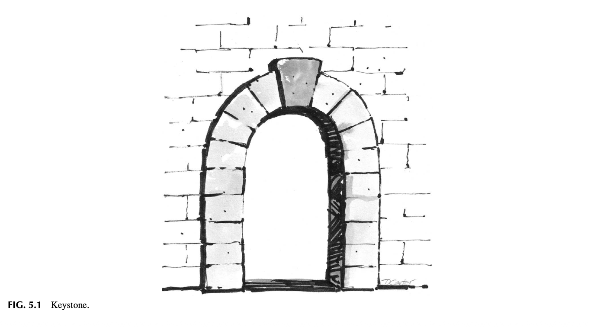

Chapter 5. 기본 안전경영시스템의 개요
Overview of Basic Safety Management Systems
1 INTRODUCTION (도입)
안전경영시스템(SMS, Safety Management System)은 작업장 내 잠재적인 운영상 유해위험요인과 관련 리스크를 체계적으로 식별하고 통제하기 위해 필요한 다양한 구성 요소들을 종합적으로 기획, 관리, 집행하는 구조화된 경영 프레임워크입니다. 올바른 안전경영시스템 구조를 갖추어야만 위험성평가와 통제 조치에 올바른 우선순위를 부여하고 전 임직원을 실질적으로 보호할 수 있습니다.
1.1 제5장의 핵심 학습 목표
- 다양한 안전경영시스템에 공통적으로 존재하는 핵심 원칙과 필수 요소를 규명한다.
- 경영 리더십의 헌신과 현장 직원의 자발적 참여(Employee Involvement) 간의 상호작용을 비교·분석한다.
- 명확한 역할과 책임(Roles and Responsibilities) 규정이 시스템 성공에 미치는 결정적 영향을 논의한다.
- 유해위험요인 발굴, 리스크 평가, 예방 및 통제 조치의 중요성을 이해한다.
- 안전 전문가가 타 부서와 효과적으로 소통하고 협업하는 다학제적 접근법을 습득한다.
- 안전경영시스템이 조직의 기저 안전문화 형성에 미치는 결정적 인과관계를 규명한다.
2 THE COMMON LINK BETWEEN SAFETY MANAGEMENT SYSTEMS (안전경영시스템 간의 공통 연결고리)
각국 정부 기관, 표준 기구, 그리고 산업 협회는 저마다의 안전경영시스템 정의를 내리고 있지만, 그 근본적 지향점은 동일합니다:
- 미국 연방항공청 (FAA): "안전 리스크를 관리하고 리스크 통제의 유효성을 보장하기 위한 공식적이고 하향식인 전사적 접근법." (FAA, 2017)
- 국제표준화기구 (ISO 45001): "사고를 예방하고 안전보건 성과를 능동적으로 개선하기 위한 체계적이고 지속적인 프로세스." (ISO, 2016)
- 미국 국립안전협회 (NSC): "목표 설정, 계획 수립, 기준 대비 성과 측정을 통해 안전 리스크를 관리하는 명시적이고 포괄적인 지속적 개선 프로세스." (NSC, 2018)
[표 5.1 상세 분석] 일반 비즈니스 경영 접근법과 안전경영시스템의 비교 매핑

Table 5.1
* 비전/미션: 전사 비전과 완벽하게 정렬된 안전 비전 수립.
* 정책/절차: 일반 비즈니스 사규와 동일한 체계로 안전 표준 작업 절차서(SOP) 내재화.
* 모니터링: 품질 감사와 마찬가지로 안전 비준수 사항 및 잠재 리스크를 상시 모니터링.
3 SAFETY MANAGEMENT SYSTEMS DEFINED (안전경영시스템의 핵심 6대 공통 요소)
산업 분야와 기업 규모를 불문하고 성공적인 안전경영시스템이 공유하는 6대 핵심 지주:
- 경영 리더십 (Management Leadership): 최고경영진의 확고한 의지와 자원 지원.
- 근로자 참여 (Employee Involvement): 현장 작업자의 실질적 권한과 적극적 발언권.
- 위험 식별 및 평가 (Hazard Identification & Assessment): 잠재 유해위험요인의 선제적 발굴.
- 위험 예방 및 통제 (Hazard Prevention & Control): 근원적 엔지니어링 개선 및 안전장치.
- 교육 및 훈련 (Education & Training): 계층별 직무 맞춤형 안전 역량 배양.
- 시스템 평가 및 개선 (System Evaluation & Improvement): 정기 감사 및 지속적 피드백.
4 MANAGEMENT LEADERSHIP (경영 리더십: 시스템을 지탱하는 쐐기돌)
경영 리더십은 안전경영시스템의 아치 구조를 완성하는 가장 중요한 '쐐기돌(Keystone)'입니다.
[그림 5.1 & 5.2 상세 분석] 아치 구조의 쐐기돌과 취약한 쐐기돌의 붕괴

Fig 5.1

Fig 5.2
* Fig 5.1 Keystone: 석조 아치의 최상단 중심에 위치한 쐐기돌이 견고할 때 양쪽의 모든 벽돌(구성 요소)이 단단히 맞물려 버팁니다.
* Fig 5.2 Weak Keystone: 만약 쐐기돌(경영 리더십)이 금이 가거나 흔들리면, 아무리 다른 벽돌(규정, 교육, 장비)이 훌륭해도 아치 전체가 순식간에 와르르 무너져 내립니다.
[Observation 1 & Lesson Learned 1] 규칙을 위반한 관리자의 담배 한 개비
- Observation 1: 리더가 현장을 지나가며 기본 수칙을 위반하는 순간, 조직에는 "규칙은 단지 보여주기식일 뿐이다"라는 치명적인 불문율이 각인됩니다.
- Lesson Learned 1: 폭발 위험 지역의 "금연" 표지판 바로 아래에서 태연히 담배를 피우던 공장장의 일화. "전임 공장장이 비흡연자라서 붙여둔 표지판일 뿐"이라는 관리자의 오만한 변명은 전사 구성원들에게 "아무도 금연 표지판을 지킬 필요가 없다"는 신호를 보냈고, 건물 전체에 무단 흡연이 만연하는 참담한 결과를 낳았습니다.
[그림 5.3 & 5.4 상세 분석] 지속 가능한 안전 프로세스로의 여정과 검토 주기

Fig 5.3

Fig 5.4
* 수동적 규제 준수 단계에서 시작하여 자율적 안전문화로 도약하는 단계적 여정을 시각화합니다.
4.1 Employee Involvement (근로자 참여의 결정적 중요성)
- 주인의식(Ownership)의 형성:
작업자가 직접 안전 프로세스 설계와 위험성평가에 참여할 때 진정한 내재화가 이루어집니다.
- [Observation 2] 은퇴 군인 출신 현장 작업자들의 자발적 참여:
안전 관리자가 일방적인 지시 대신 현장에 도움과 자발적 자원을 요청했을 때, 과거 군 복무 시절 위험관리 전문성을 쌓았던 직원들이 대거 자원하여 선행 안전 활동의 폭발적 성장을 이끌어낸 사례.
5 DEFINING ROLES AND RESPONSIBILITIES (명확한 역할, 책임 및 권한의 부여)
모호한 책임은 무책임을 부릅니다. 피터 드러커가 강조했듯, 각 직급별로 구체적인 안전 책무와 권한이 직무기술서에 명시되어야 합니다.
- 경영진: 안전 비전 제시, 자원(예산/인력) 배분, 전사적 총괄 책임.
- 관리감독자(현장 소장/팀장): 작업 전 위험 확인, 표준 준수 코칭, 아차사고 즉각 조치.
- 현장 근로자: 본인 및 동료의 안전 수칙 준수, 위험 발견 시 작업 중지권 행사.
6 HAZARD AND RISK ASSESSMENT IDENTIFICATION AND ANALYSIS (위험성 식별, 평가 및 정밀 분석)
안전경영의 핵심 엔진은 사후적 사고 조사가 아니라, 잠재된 유해위험요인을 사전에 발굴하는 사전 위험성평가(JHA/Risk Assessment)입니다.
- 위험(Hazard) 자체와 그것이 실제로 발현될 확률 및 심각성인 리스크(Risk)를 명확히 구분하여 과학적 매트릭스를 통해 우선순위를 통제해야 합니다.
7 HAZARD PREVENTION AND CONTROL (유해위험요인 예방 및 통제 기법)
위험 통제는 반드시 '위험 통제 계층(Hierarchy of Controls)'의 원칙에 따라 최상위 대책부터 적용되어야 합니다.
7.1 Prevention through Design (PtD: 설계에 의한 안전성 확보)
- 미국 국립산업안전보건연구원(NIOSH)이 주창한 핵심 개념으로, 기계나 설비가 제작·설치된 이후에 방호 울을 씌우는 땜질식 사후 조치가 아니라, 기획 및 설계 초기 단계부터 위험을 원천 제거(Elimination by Design)하는 가장 신뢰성 높은 예방 철학입니다.
7.2 Information & Training Programs (정보 큐레이션 및 체계적 교육 훈련)
- 정보 큐레이션: 안전 전문가는 방대한 안전보건 데이터를 현장과 경영진이 한눈에 파악할 수 있도록 비즈니스 언어로 가공·공급해야 합니다 (제15장 연계).
- 직무 맞춤형 교육: 단순 형식적인 법정 비디오 시청을 지양하고, 현장 설비와 직결된 실습 중심의 교육 과정을 운영해야 합니다.
8 EVALUATION OF SAFETY MANAGEMENT SYSTEM EFFECTIVENESS (시스템 유효성 평가와 갭 분석)
[그림 5.5 상세 분석] 안전경영시스템의 취약점과 간극 (Gaps) 분석

Fig 5.5
* 규정(Documented)과 현장 실행(Implemented) 사이의 괴리를 포착하여 시스템의 균열을 선제적으로 보수하는 메커니즘을 설명합니다.
9 SUMMARY (요약 및 핵심 결론)
- 안전경영시스템(SMS)은 조직의 유해위험요인을 선제적으로 통제하고 안전문화를 완성하는 구조적 뼈대입니다.
- 경영 리더십은 시스템 전체를 지탱하는 '쐐기돌(Keystone)'이며, 리더의 사소한 규칙 위반은 시스템 전체를 붕괴시킵니다.
- 근로자의 자발적 참여(Employee Involvement) 없는 시스템은 공허한 껍데기에 불과합니다.
- 설계에 의한 예방(PtD)과 위험 통제 계층 원칙을 준수하여 위험을 원천 차단해야 합니다.
10 CHAPTER REVIEW QUESTIONS (복습 문제 10문항 정밀 분석)
- 안전경영시스템의 핵심 목적: 단순 규정 준수를 넘어 위험 통제와 문화 형성에 기여하는 바는?
- 쐐기돌(Keystone) 비유의 학술적 의미: 왜 경영 리더십이 아치 구조의 키스톤으로 묘사되는가?
- 리더의 솔선수범 실패가 주는 충격: 관리자의 금연 구역 흡연 일화가 전사 안전 지각에 미친 영향은?
- 근로자 참여(Employee Involvement)의 촉진 전략: 수동적 피교육자에서 능동적 주체로 전환시키는 방안은?
- 역할과 책임(Roles and Responsibilities)의 명확화: 직급별 권한과 책무를 설계하는 핵심 원칙은?
- 설계에 의한 예방(Prevention through Design, PtD): 사후 방호 조치 대비 PtD가 가지는 압도적 우위는?
- 위험 통제 계층(Hierarchy of Controls): 제거, 대체, 공학적 대책, 관리적 대책, PPE의 우선순위 적용 요령은?
- 안전 정보 큐레이션(Information Curation): 방대한 위험 데이터를 현장 맞춤형 지식으로 변환하는 방법은?
- 시스템 유효성 평가와 갭 분석: 서류상 표준과 현장 실행 간의 간극을 도출하고 보정하는 기법은?
- 일반 비즈니스 시스템과의 통합: 안전경영시스템을 품질 및 생산 관리 시스템과 정렬시키는 방안은?
11 [APPENDIX 5.1] PREVENTION THROUGH DESIGN (PtD 국가 이니셔티브 공공 문서 분석)
미국 CDC/NIOSH의 공식 PtD 전략 가이드라인:
- 생애주기 전반(Life Cycle)에 걸친 사전 예방 설계 원칙.
- 엔지니어, 건축가, 설계 단계 참여자들의 안전 책무 강화.
- 구조물 신축 및 신규 생산 라인 도입 시 사전 위험성평가 강제 매핑 기준.
12 BIBLIOGRAPHY (참고 문헌)
- ANSI/AIHA. (2012). ANSI/AIHA/ASSE Z10-2012: Occupational Health and Safety Management Systems. American Industrial Hygiene Association.
- CDC/NIOSH. (2012). Prevention through Design: Plan for the National Initiative. Centers for Disease Control and Prevention.
- Drucker, P. F. (2006). The Effective Executive: The Definitive Guide to Getting the Right Things Done. HarperBusiness.
- FAA. (2017). Safety Management System (SMS). Federal Aviation Administration.
- ISO. (2018). ISO 45001:2018: Occupational health and safety management systems — Requirements with guidance for use. International Organization for Standardization.
- NSC. (2018). Elements of an Effective Safety Management System. National Safety Council.